My favorite section!! Beads and charms have always felt like tiny treasures to me — colorful, shiny little pieces that can turn into something meaningful with just a bit of string and creativity. If you’ve ever watched bead “scoop” videos, you know exactly why they’re so magical: bowls of mixed beads, often called “soup,” swirled together like candy, waiting to be scooped into surprise assortments. Many ASMR creators make it even more captivating, pairing crisp bead sounds with soft visuals that highlight the sparkle, texture, and charm of each piece. In this space, I explore bead culture, trends, and the materials I love using. I will also share supplies and tools that I personally use!
───୨Bead Culture─
Beads and charms have always been involved in my life. I enjoy crafting. It's one of my passions that basically fuels my creative side. Beads are far more than pretty little trinkets — they carry deep roots, rich histories, and a timeless ability to connect people, identity, and art. From ancient civilizations to modern makers, beadwork has long served as a way to express status, spirituality, community, and personal style.
All around the world, different cultures have woven beads into their traditions in meaningful and beautiful ways. In many African societies, bead colors and patterns communicated social rank, life milestones, marital status, or spiritual roles. Certain bead types, such as glass trade beads or Maasai color-coded strands, carried messages that only community members could fully interpret. Indigenous groups throughout the Americas crafted beads from shells, bones, stones, and seeds, using them to tell stories, to honor ancestors, and to enrich ceremonial dress. In regions across Asia, Europe, and Oceania, beads have held mystical or symbolic meaning — worn as protective amulets, exchanged as tokens of good fortune, or incorporated into rituals that tie people to their beliefs and their land. Even the materials themselves held significance: some beads symbolized prosperity, others protection, others remembrance.
Beadwork today is a blend of preservation and innovation. On one end of the spectrum, bead-making can be as simple and heartfelt as gifting someone a handmade charm to show appreciation. On the other, it can be a deeply artistic practice rooted in cultural storytelling, heritage, and meticulous craftsmanship. Modern bead culture continues these traditions while embracing new materials, techniques, and aesthetics. Artisans now experiment with polymer clay, resin, glass lampwork, metal accents, and even 3D-printed components to push bead design into new territory. Digital tools allow makers to prototype and refine patterns, while social media has created global communities where artisans share tutorials, inspire each other, and keep cultural techniques alive. Thanks to e-commerce and online marketplaces, small creators can now sell their work worldwide, transforming beadwork from a local craft into a global conversation that celebrates diversity, creativity, and personal expression.
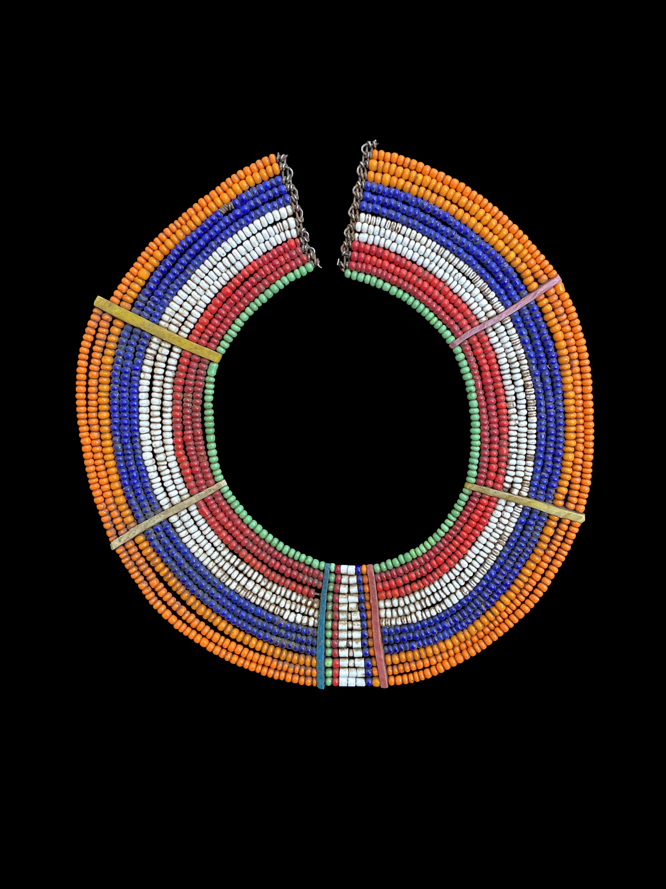
Maasai bead collar — Kenya & Tanzania
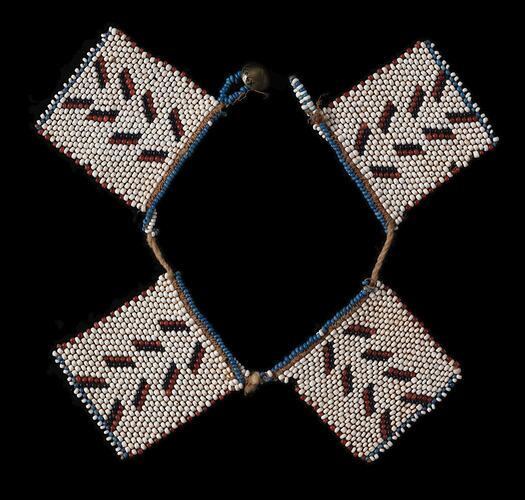
Nguni Beadwork - Northern Nguni
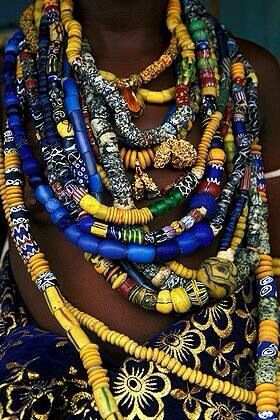
Krobo Beads — Ghana
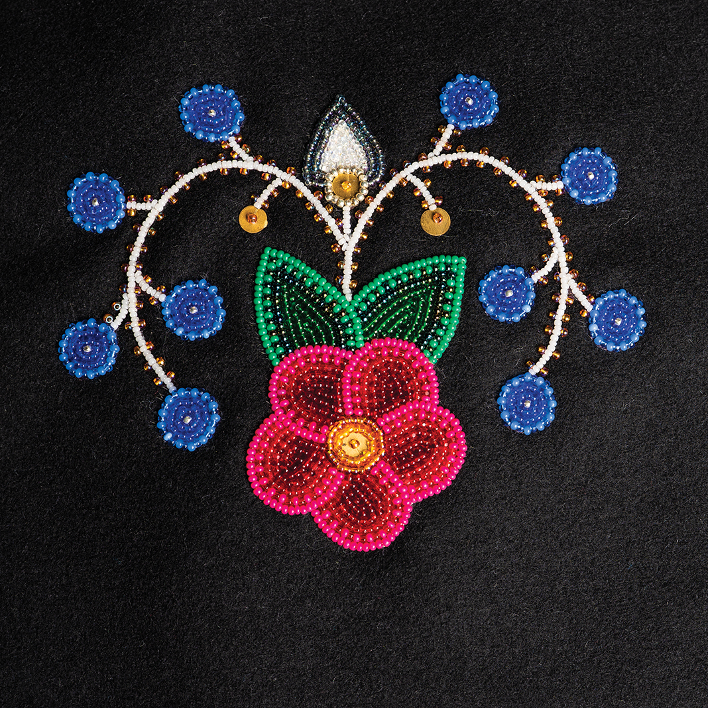
Ojibwe Floral Beadwork — North America
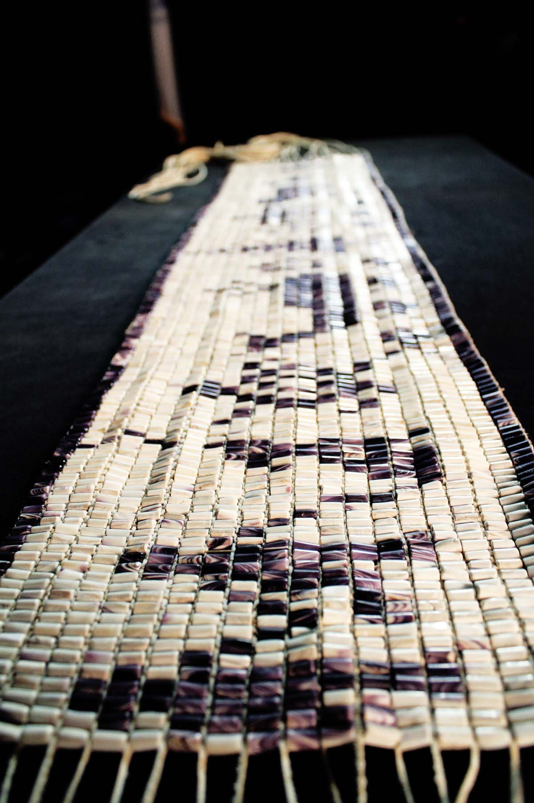
Wampum Shell Bead Belt — Haudenosaunee
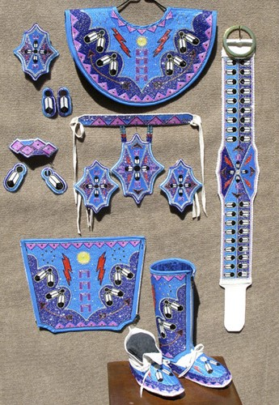
Beaded Women's Shawl — Various
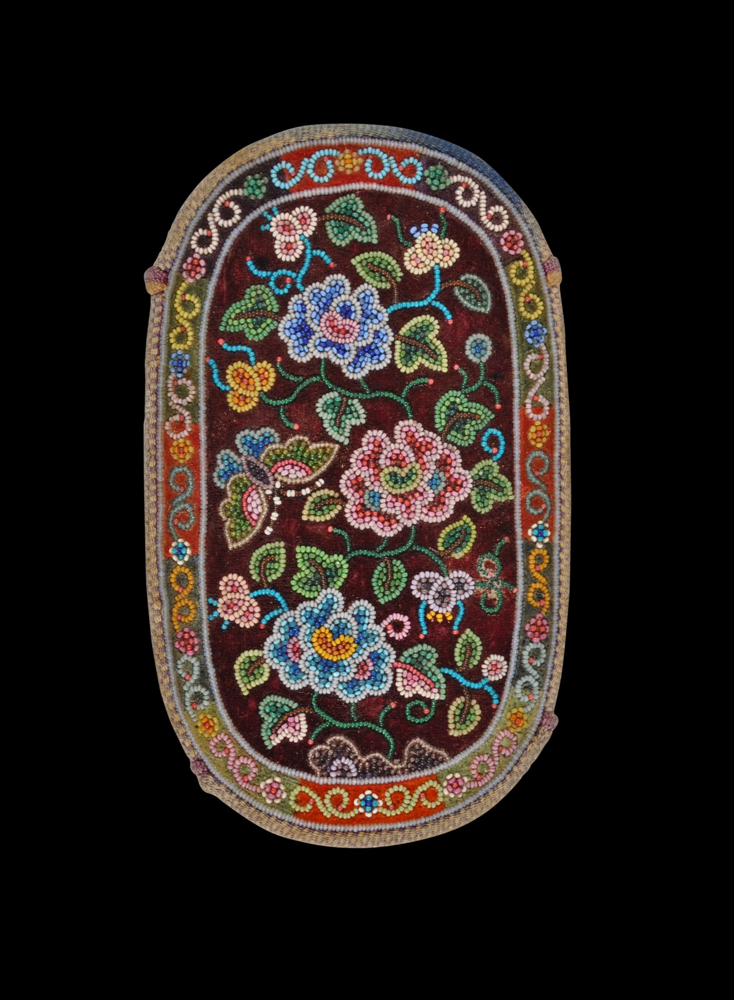
Peranakan or Straits Beaded Pouch — Indonesia
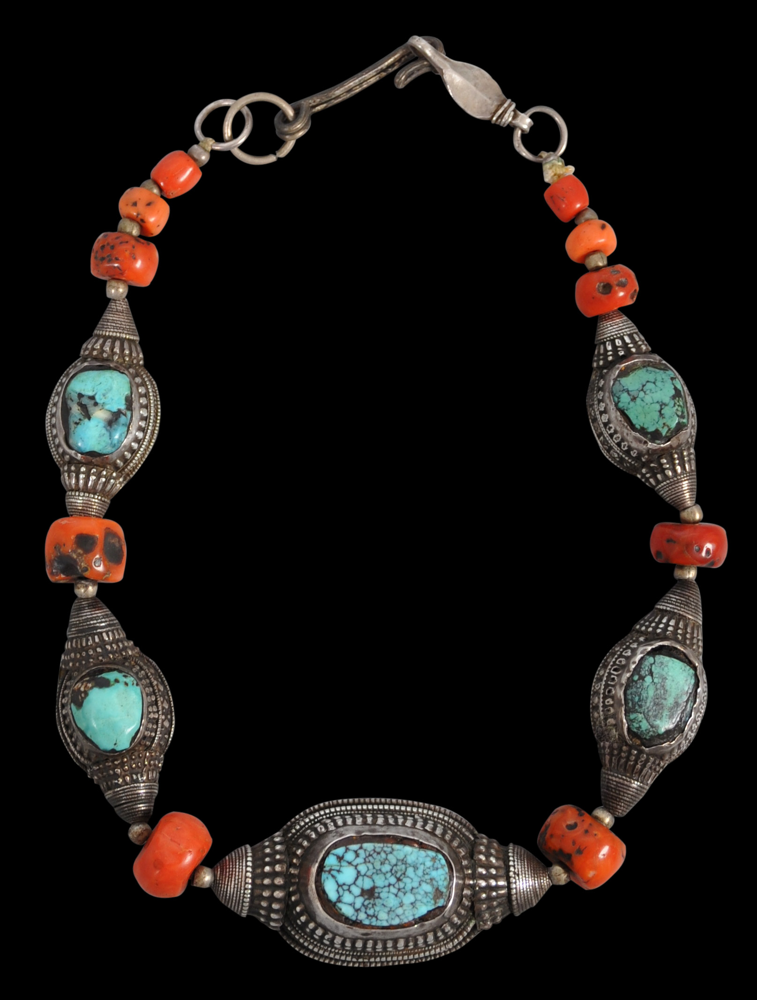
Tibetan turquoise & coral — Tibet & Himalayas
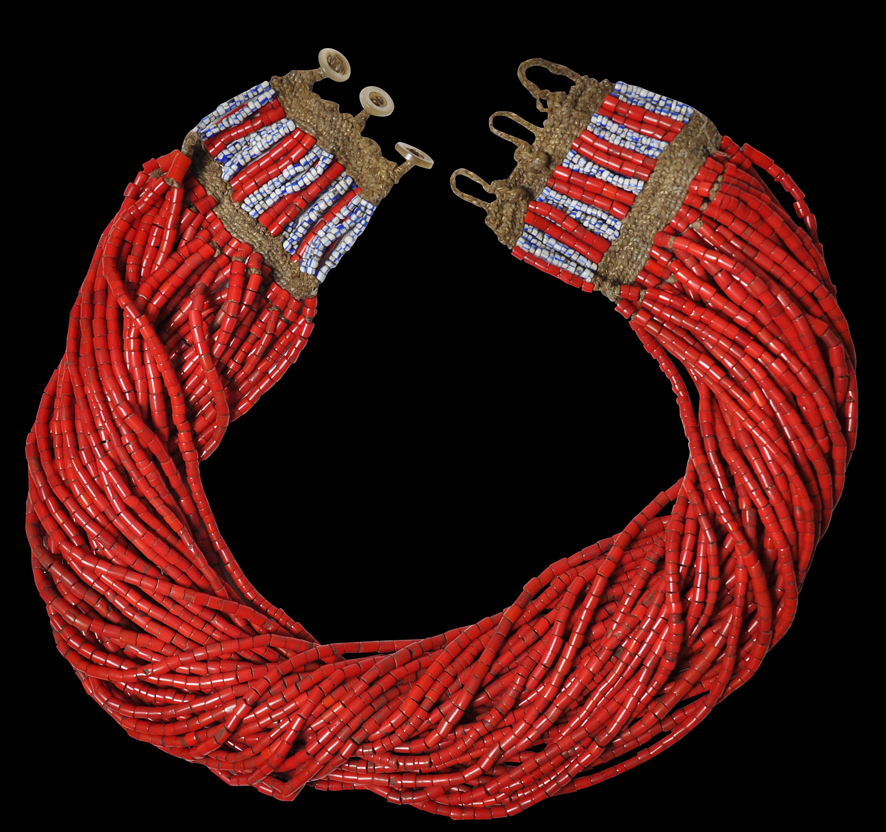
Naga bead textile — India & Myanmar
───୨ৎTrends─
From my own experience, I feel like 2025's bead trends varied. A lot of it just depended on people's preferences. I personally like bold and chunkier pieces. With senstive skin, I choose to wear natural materials like wood, stone, crystals, pearls, shell, etc. I like layering my bracelets. This would be called stacking. For necklaces, I might wear two: one as a choker length, the other as maybe an 18in. strand length.
Now, with the whole clean girl vibe, you might see more simple pieces. Some may opt for a bolder look, whether that's adding more bling (diamonds duh) or even metals. Some may have more of a romantic kind of vibe where you'll see baroque aesthetics -- the pearls, the crystal jewels, and more eclectic looks. I also noticed a lot of fashion influencers and people who are involved in music subcultures, would go for stuff that matches their aesthetic. We also have the silver, gold, or two-toned preferences people may have.
And of course, the Y2K revival is still going strong. People are embracing colorful plastic beads, chunky charms, playful motifs, neon accents, and fun textures. There’s something comforting about that chaotic, glittery, unapologetically nostalgic energy — it celebrates creativity in the most joyful way.
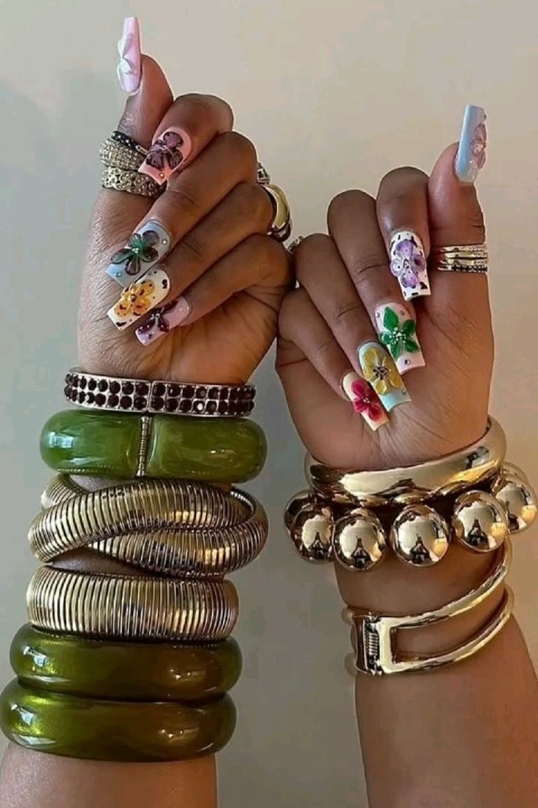
Bangle Stacks
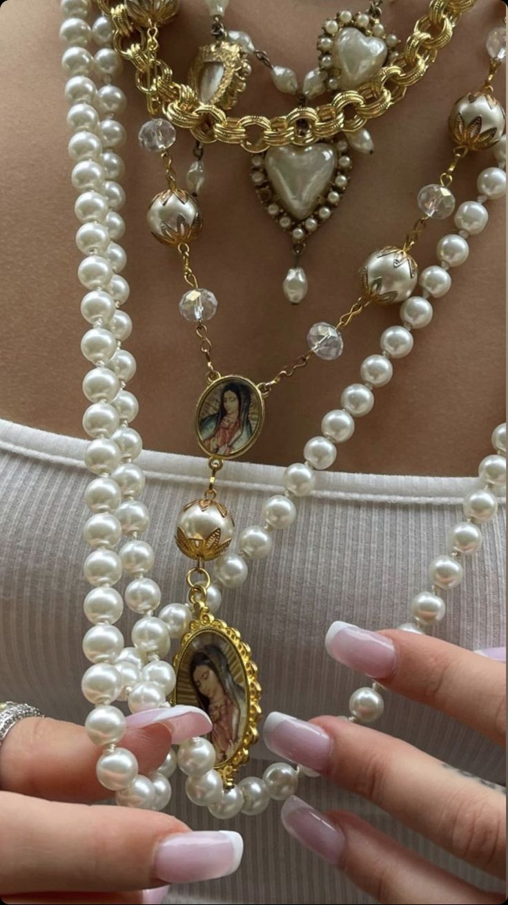
Baroque Pearls Set
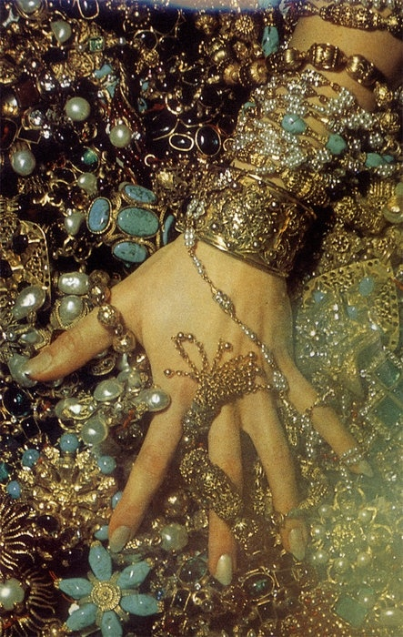
Bohemian Beads
───୨ৎLinks (Credits)─
- Threads of Heritage: Discovering the Cultural Significance of Beads
- WIKI: Beads
- Native American Beadwork
- Inside the Beautiful Art and History of Beaded Jewelry
- The Timeless Allure of Beaded Jewelry: A Historical Journey
- Maasai Beaded Collar/Necklace
- Zulu/Nguni Beadwork
- Pinterest source — Krobo Beads from Ghana
- Ojibwe Floral Beadwork
- KQ Custom Designs & Beadwork
- Wampum Belt
- Naga Necklace
- Tibetan Turquoise & Coral Necklace
- Beaded Pouch
- Y2K Jewelry
- Bangles Stack
- Baroque Pearls
- Bohemian Jewelry